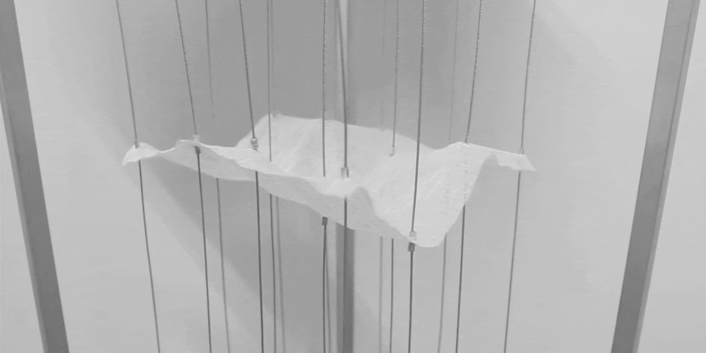
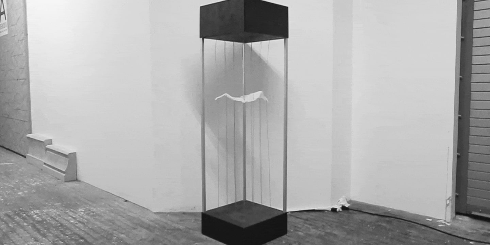
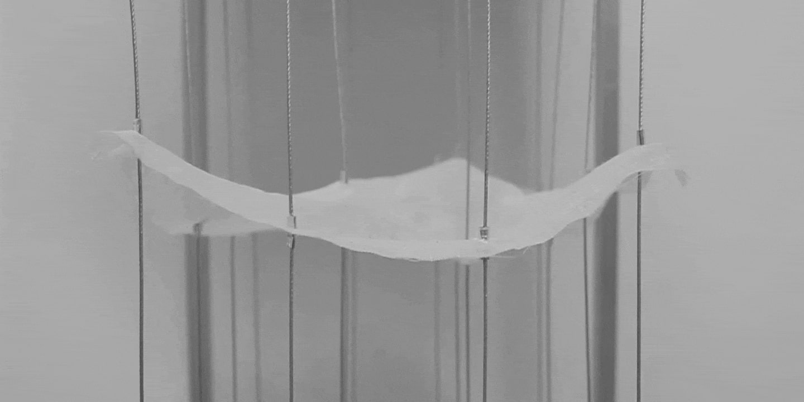

Motion
Motion is a prototype developed to prove the concept of using discrete units to control continuous surface.
The kinetic sculpture showcases a piece of smooth, loose fabric suspended in the air by sixteen actuating steel cables placed at a 4x4 grid.
By tinkering with amplitude, wavelength, and speed of wave motion, the kinetic sculpture displays drastic spatial dimensions through continuously running a sequence of unique compositions modeled on sea waves.


The kinetic sculpture displays drastic spatial dimensions through continuously running a sequence of unique compositions modeled on sea waves.

The seemingly still fabric is brought to life as one observes the seamless movement and tension of the fabric's physical form.

Periodic mathematical functions are used to resonate the embedded tempo of nature, with the addition of computer-generated randomness to introduce chaos to systems.
Axis Mundi is a project exploring man’s attempt to override nature with technology and nature’s resistance.
© 2019
Ellen Lo
&
Hilda Wong
All Rights Reserved.